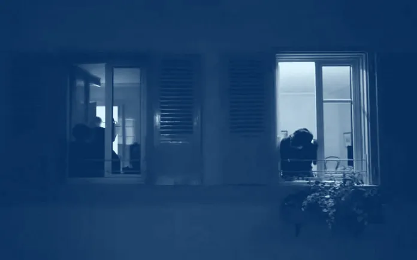

Che se sparisci
Stai assieme a me,Che se sparisciMi perdo dentro me stesso,Perché casa non esisteSe fuori ci finisciChe se sparisci, rimango fermoPassano vuote le giornateNon perché, da te dipendoMa dipende chi me lo sta chiedendoCome un abaco conto il tempoChe divide l’unione, il nostro istantePerché è una mia scelta, accettoIl rischio che se sparisci ne pago pegnoChe se il tempo, inesorabile passaOgni lacrima versata, oro nelle tascheChe non compra istanti persi,O passati senza accorgerci di viverliMa se un giorno tu sparisciNon potrò mai, rimpiangereIl tempo che è stato nostroMagari sarà che non saprò dove tornarePerché casa non è un postoMa qualcuno da trovare, capisci?